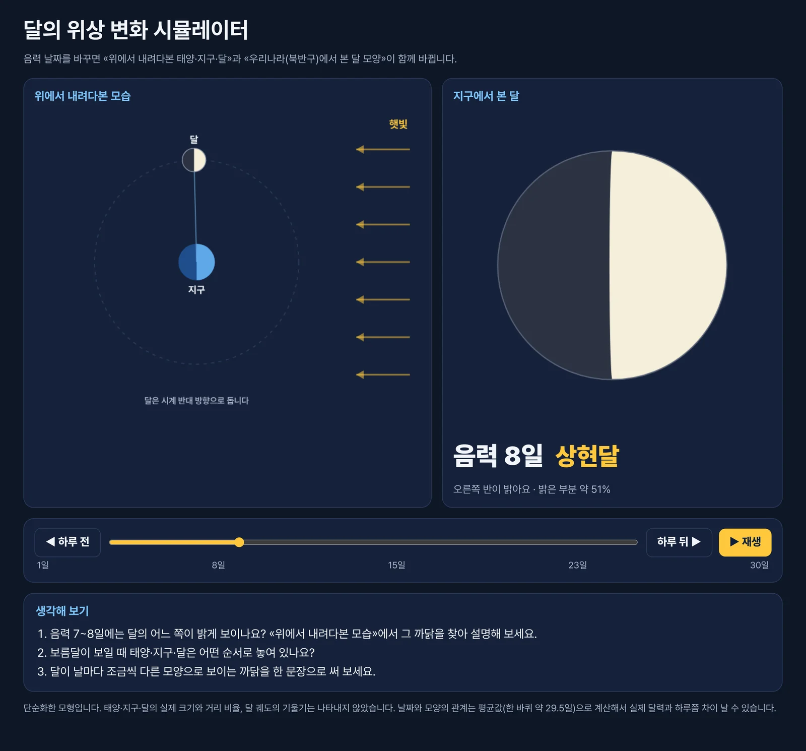
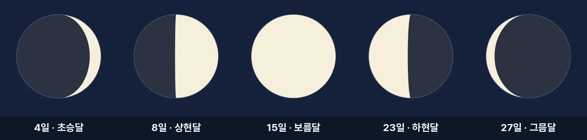

6차시 · Ⅱ. 클로드 코드
개념 시뮬레이터 만들기
슬라이더를 움직이면 그림이 바뀌는 수업용 시뮬레이터를 한 파일짜리 웹페이지로 만듭니다. 인터넷이 없는 교실 PC에서도 열립니다.
과업
- 목표
- 음력 날짜를 바꾸면 위에서 본 태양·지구·달 배치와 지구에서 본 달 모양이 함께 바뀌는 시뮬레이터 (예시: 중학교 과학 «달의 위상 변화»)
- 준비물
클로드연수안에 만든 빈6차시폴더- 결과물
index.html한 파일 — 외부 라이브러리·인터넷 없이 열림, 학생 질문 3개 포함- 주의
- 과학 개념의 정확성은 교사가 확인 · 단순화한 부분을 화면에 밝히기
채팅의 아티팩트로도 시뮬레이터를 만들 수 있지만, Code 탭은 내 폴더에 진짜 파일을 만듭니다. 파일이 있으니 USB로 옮기거나 수정하거나, 8차시처럼 인터넷에 올려 학생에게 나눌 수 있습니다. 만든 파일은 앱 안 브라우저 창에서 바로 열어 볼 수 있습니다.
먼저 볼 영상

1 준비
클로드연수안에 빈 폴더6차시를 만듭니다.- Code 탭을 처음 쓴다면 연수 전 점검의 2번(데스크톱 앱 설치)을 먼저 확인합니다. Code 탭은 따로 설치하지 않습니다.
2 따라 하기
번호 순서대로 진행합니다. 프롬프트가 필요한 단계에는 바로 아래에 복사 단추가 있습니다.
- 데스크톱 앱 사이드바 맨 위의 Code 탭을 누릅니다.
- 프롬프트 상자 아래 줄의 첫 단추(환경)를 눌러 Local 묶음의 맨 위 항목(내 컴퓨터)을 고릅니다.
- 그 옆 폴더 단추에서 Open folder… 를 눌러
클로드연수/6차시를 고릅니다. - 같은 줄의 권한 모드 단추를 Plan 으로 바꿉니다. Plan 모드에서는 파일을 고치지 않고 계획만 나옵니다.
캡처 넣을 곳 · L06-1
Code 탭에서 환경과 폴더를 고르는 화면 (따라 하기 2~4번).- 번호 표시: ① 환경 단추를 눌러 Local 맨 위 항목 ② 폴더 단추의 Open folder… ③ 권한 모드에서 Plan
- 계획을 받습니다. 아래 프롬프트를 보내고 계획을 읽습니다. 고칠 점은 말로 고칩니다. 예: «질문은 4개로, 마지막 질문은 서술형으로»
중학교 과학 '달의 위상 변화' 수업에서 쓸 시뮬레이터를 만들려고 합니다. 먼저 계획만 세워 주세요. 요구 사항 - index.html 한 파일. 외부 라이브러리·글꼴·인터넷 없이 열려야 함 - 그림 1: 위에서 내려다본 태양·지구·달 배치 (햇빛은 오른쪽에서, 달은 시계 반대 방향으로 공전) - 그림 2: 우리나라(북반구)에서 본 달 모양 - 음력 1~30일 슬라이더, 하루 전·하루 뒤 단추, 재생·멈춤 단추 - 날짜마다 위상 이름(삭, 초승달, 상현달, 보름달, 하현달, 그믐달)과 밝은 쪽 설명 표시 - 아래에 학생이 생각해 볼 질문 3개 - 교실 TV에서도 읽히게 큰 글자, 휴대폰에서는 위아래로 배치 - 키보드로도 조작 가능 - 실제 크기·거리 비율처럼 단순화한 점은 화면 아래에 밝히기 계획에는 화면 구성, 날짜에 따라 달 모양을 계산하는 방법, 다 만든 뒤 확인할 방법을 적어 주세요.
«계산하는 방법을 적어 주세요»가 중요합니다. 날짜에서 달 모양을 어떻게 구하는지 계획에 드러나야 교사가 개념이 맞는지 미리 볼 수 있습니다. «북반구»도 빼지 않습니다. 남반구에서는 밝은 쪽이 반대로 보입니다. «인터넷 없이»를 적어 두면 학교망에서 막히는 외부 파일을 쓰지 않습니다.
캡처 넣을 곳 · L06-2
Plan 모드의 계획 (따라 하기 5번).- 계획 전체가 보이게
- 권한 모드를 Manual 로 바꾸고 아래 프롬프트로 만들기를 맡깁니다. 파일을 만들기 전에 바뀔 내용과 승인·거절 단추가 나오면 승인합니다.
계획대로 만들어 주세요. 다 만들면 앱 안 브라우저 창에서 열어 직접 확인하고, 음력 1·8·15·23일의 달 모양과 위상 이름을 표로 정리해 알려 주세요.
캡처 넣을 곳 · L06-3
바뀔 내용과 승인 단추 (따라 하기 6번).- 빨간 상자: 승인 단추
- 대화창에 나온
index.html경로를 누르면 앱 안 브라우저 창에서 열립니다. 슬라이더와 단추를 직접 움직여 봅니다.캡처 넣을 곳 · L06-4
앱 안 브라우저 창 (따라 하기 7번).- 빨간 상자: 대화창의
index.html경로와 브라우저 창
- 빨간 상자: 대화창의
- 아래 프롬프트로 과학 내용을 검수하게 하고, 고칠 점은 하나씩 요청합니다.
과학 내용을 검수해 주세요. 1. 음력 7~8일에 오른쪽 반이 밝은 상현달, 22~23일에 왼쪽 반이 밝은 하현달이 나오는지 2. 위에서 본 그림에서 달의 밝은 쪽이 언제나 태양 쪽을 향하는지 3. 달 모양이 지구 그림자 때문에 생기는 것처럼 보이게 그린 곳이 없는지 4. 위상 이름과 설명이 중학교 교과서 용어와 다른 곳이 있는지 틀린 곳은 고치고, 고친 내용을 한 줄씩 알려 주세요.
- 파일 탐색기(맥은 Finder)에서
6차시/index.html을 더블클릭하면 크롬·엣지에서 열립니다. 이 파일을 교실 PC로 옮겨 수업에 씁니다.
3 결과 예시


이 결과 예시에 대해
프롬프트 1의 요구 사항대로 연수자료를 만들 때 만든 것입니다. 날짜와 모양의 관계는 평균 주기(약 29.5일)로 계산했고, 음력 8일 상현·15일 보름·23일 하현이 나오는지 확인했습니다. 클로드 코드의 실제 결과는 화면 구성과 색이 매번 다릅니다.
4 검증 포인트
① 개념 정확성 — 북반구 기준으로 음력 7~8일에 오른쪽 반, 22~23일에 왼쪽 반이 밝은지, 15일 무렵이 보름인지 슬라이더로 직접 봅니다.
② 두 그림의 일치 — 보름달일 때 위에서 본 그림이 «태양 – 지구 – 달» 순서인지, 삭일 때 «태양 – 달 – 지구» 순서인지 봅니다.
③ 오개념을 부르는 그림 — 달 모양이 지구 그림자 때문인 것처럼 그리지 않았는지 봅니다. 학생이 자주 가지는 오개념입니다.
④ 단순화 표시 — 크기·거리 비율, 궤도 기울기처럼 실제와 다른 점이 화면에 적혀 있는지 봅니다.
⑤ 인터넷 없이 열리는지 — 와이파이를 끄고 열거나, 파일만 USB로 다른 PC에 옮겨 엽니다.
⑥ 교실 화면 — 교실 TV에 띄워 뒷자리에서 글자가 읽히는지 봅니다.
⑦ 키보드 조작 — Tab 으로 슬라이더에 가서 화살표 키로 날짜가 바뀌는지 봅니다.
⑧ 질문 — 학생 질문을 이 시뮬레이터만 보고 실제로 답할 수 있는지 교사가 풀어 봅니다.
② 두 그림의 일치 — 보름달일 때 위에서 본 그림이 «태양 – 지구 – 달» 순서인지, 삭일 때 «태양 – 달 – 지구» 순서인지 봅니다.
③ 오개념을 부르는 그림 — 달 모양이 지구 그림자 때문인 것처럼 그리지 않았는지 봅니다. 학생이 자주 가지는 오개념입니다.
④ 단순화 표시 — 크기·거리 비율, 궤도 기울기처럼 실제와 다른 점이 화면에 적혀 있는지 봅니다.
⑤ 인터넷 없이 열리는지 — 와이파이를 끄고 열거나, 파일만 USB로 다른 PC에 옮겨 엽니다.
⑥ 교실 화면 — 교실 TV에 띄워 뒷자리에서 글자가 읽히는지 봅니다.
⑦ 키보드 조작 — Tab 으로 슬라이더에 가서 화살표 키로 날짜가 바뀌는지 봅니다.
⑧ 질문 — 학생 질문을 이 시뮬레이터만 보고 실제로 답할 수 있는지 교사가 풀어 봅니다.
5 다른 교과에 적용하기
따라 하기 5단계 프롬프트 대신 아래 교과 프롬프트를 씁니다. 교과마다 «다 만든 뒤 확인할 것»을 넣어 두었으니, 6단계와 8단계는 아래 공통 프롬프트로 바꿔 씁니다. 자료가 필요한 사례는 교사가 확인한 자료 파일을 폴더에 함께 넣어 줍니다.
계획대로 만들어 주세요. 다 만들면 앱 안 브라우저 창에서 열어 직접 확인하고, 계획의 «다 만든 뒤 확인할 것»을 하나씩 점검한 결과를 표로 알려 주세요.
내용을 검수해 주세요. 1. 계획의 «다 만든 뒤 확인할 것»을 다시 하나씩 점검 2. 교과서 용어와 다른 표현이 있는지 3. 학생이 오해할 만한 그림이나 설명이 있는지 틀린 곳은 고치고, 고친 내용을 한 줄씩 알려 주세요.
수학일차함수와 그래프기울기·y절편 슬라이더로 그래프와 식이 함께 바뀜
중학교 수학 '일차함수와 그래프' 수업에서 쓸 시뮬레이터를 만들려고 합니다. 먼저 계획만 세워 주세요. 요구 사항 - index.html 한 파일. 외부 라이브러리·글꼴·인터넷 없이 열려야 함 - 기울기 a, y절편 b 슬라이더 (−5~5, 0.5 간격) - 좌표평면에 y = ax + b 그래프와 식을 함께 표시 - 기울기가 양수·음수·0일 때 그래프가 어떻게 기우는지 한 줄 설명 - 아래에 학생이 생각해 볼 질문 3개 - 교실 TV에서도 읽히게 큰 글자, 휴대폰에서는 위아래로 배치 - 키보드로도 조작 가능 - 실제와 다르게 단순화한 점은 화면 아래에 밝히기 다 만든 뒤 확인할 것 - a = 2, b = −1 일 때 그래프가 (0, −1)과 (1, 1)을 지나는지 - a = 0 이면 x축에 평행한 직선인지 - 식이 교과서처럼 y = 2x − 1 꼴로 표시되는지 계획에는 화면 구성, a·b 값으로 그래프를 그리는 방법, 위의 확인 방법을 적어 주세요.
수학확률과 상대도수던지는 횟수가 늘수록 상대도수가 1/2·1/6에 가까워짐
중학교 수학 '확률과 상대도수' 수업에서 쓸 시뮬레이터를 만들려고 합니다. 먼저 계획만 세워 주세요. 요구 사항 - index.html 한 파일. 외부 라이브러리·글꼴·인터넷 없이 열려야 함 - 동전·주사위 고르기, 던지는 횟수 10·100·1000번 단추 - 결과 표와 상대도수 꺾은선 그래프, 이론값(동전 1/2, 주사위 1/6) 기준선 - 다시 던지기 단추 - 아래에 학생이 생각해 볼 질문 3개 - 교실 TV에서도 읽히게 큰 글자, 휴대폰에서는 위아래로 배치 - 키보드로도 조작 가능 - 실제와 다르게 단순화한 점은 화면 아래에 밝히기 다 만든 뒤 확인할 것 - 1000번 던지면 상대도수가 이론값 가까이 가는지 - 주사위 눈별 횟수를 더하면 던진 횟수와 같은지 계획에는 화면 구성, 무작위 결과를 만들고 상대도수를 계산하는 방법, 위의 확인 방법을 적어 주세요.
과학기체의 압력과 부피피스톤으로 부피를 바꾸면 충돌 횟수와 압력이 바뀜
중학교 과학 '기체의 압력과 부피' 수업에서 쓸 시뮬레이터를 만들려고 합니다. 먼저 계획만 세워 주세요. 요구 사항 - index.html 한 파일. 외부 라이브러리·글꼴·인터넷 없이 열려야 함 - 피스톤 슬라이더로 상자 부피 바꾸기 - 상자 안 입자가 움직이는 애니메이션, 벽에 부딪친 횟수와 압력 표시 - 온도와 입자 수는 일정 - 부피–압력 그래프 - 아래에 학생이 생각해 볼 질문 3개 - 교실 TV에서도 읽히게 큰 글자, 휴대폰에서는 위아래로 배치 - 키보드로도 조작 가능 - 실제와 다르게 단순화한 점은 화면 아래에 밝히기 다 만든 뒤 확인할 것 - 부피를 절반으로 줄이면 압력이 약 두 배가 되는지 (보일 법칙) - 부피를 바꿔도 입자 수가 그대로인지 계획에는 화면 구성, 충돌 횟수로 압력을 나타내는 방법, 위의 확인 방법을 적어 주세요.
과학빛의 굴절입사각 슬라이더, 공기→물·유리로 꺾이는 각도
중학교 과학 '빛의 굴절' 수업에서 쓸 시뮬레이터를 만들려고 합니다. 먼저 계획만 세워 주세요. 요구 사항 - index.html 한 파일. 외부 라이브러리·글꼴·인터넷 없이 열려야 함 - 입사각 슬라이더 (0~89°), 매질 고르기 (공기→물, 공기→유리) - 입사 광선·굴절 광선·법선과 각도 숫자 표시 - 쓴 굴절률(물 1.33, 유리 1.5)을 화면에 밝히기 - 아래에 학생이 생각해 볼 질문 3개 - 교실 TV에서도 읽히게 큰 글자, 휴대폰에서는 위아래로 배치 - 키보드로도 조작 가능 - 실제와 다르게 단순화한 점은 화면 아래에 밝히기 다 만든 뒤 확인할 것 - 입사각이 0°이면 꺾이지 않고 곧게 나아가는지 - 공기에서 물로 갈 때 굴절각이 입사각보다 작은지 계획에는 화면 구성, 굴절각을 계산하는 방법, 위의 확인 방법을 적어 주세요.
사회인구 피라미드연도 슬라이더로 피라미드 모양이 바뀜 (첨부 자료만)
중학교 사회 '인구 피라미드' 수업에서 쓸 시뮬레이터를 만들려고 합니다. 먼저 계획만 세워 주세요. 요구 사항 - index.html 한 파일. 외부 라이브러리·글꼴·인터넷 없이 열려야 함 - 연도 슬라이더를 옮기면 그해의 인구 피라미드(남녀 좌우)가 그려짐 - 유소년·생산 연령·노년 인구 비율 표시 - 자료는 첨부한 인구자료.csv (교사가 통계 자료에서 옮긴 것)만 쓰고, 없는 숫자는 지어내지 않기 - 아래에 학생이 생각해 볼 질문 3개 - 교실 TV에서도 읽히게 큰 글자, 휴대폰에서는 위아래로 배치 - 키보드로도 조작 가능 - 실제와 다르게 단순화한 점은 화면 아래에 밝히기 다 만든 뒤 확인할 것 - 그림의 막대 길이가 첨부 파일의 숫자와 맞는지 - 남녀 위치가 범례와 맞는지 계획에는 화면 구성, 첨부 자료를 읽어 막대를 그리는 방법, 위의 확인 방법을 적어 주세요.
사회시차 계산도시를 고르면 경도에 따른 현지 시각과 날짜
중학교 사회 '시차 계산' 수업에서 쓸 시뮬레이터를 만들려고 합니다. 먼저 계획만 세워 주세요. 요구 사항 - index.html 한 파일. 외부 라이브러리·글꼴·인터넷 없이 열려야 함 - 세계 도시 10곳 고르기, 서울 시각을 넣으면 그 도시의 현지 시각 표시 - 도시의 경도와 표준시(UTC 기준) 함께 표시 - 날짜가 바뀌면 «다음 날·전날» 표시 - 서머타임은 고려하지 않는다고 화면에 밝히기 - 아래에 학생이 생각해 볼 질문 3개 - 교실 TV에서도 읽히게 큰 글자, 휴대폰에서는 위아래로 배치 - 키보드로도 조작 가능 - 실제와 다르게 단순화한 점은 화면 아래에 밝히기 다 만든 뒤 확인할 것 - 서울 오후 3시일 때 런던이 같은 날 오전 6시로 나오는지 - 날짜가 바뀌는 도시에서 «다음 날·전날» 표시가 나오는지 계획에는 화면 구성, 표준시 차이로 현지 시각을 계산하는 방법, 위의 확인 방법을 적어 주세요.
역사연표 탐색시대 슬라이더를 옮기면 그 시기의 사건 카드 (첨부 목록만)
중학교 역사 '연표 탐색' 수업에서 쓸 시뮬레이터를 만들려고 합니다. 먼저 계획만 세워 주세요. 요구 사항 - index.html 한 파일. 외부 라이브러리·글꼴·인터넷 없이 열려야 함 - 시대 슬라이더를 옮기면 그 시기의 주요 사건 카드(연도·사건·한 줄 설명)가 나옴 - 사건을 누르면 설명이 펼쳐짐 - 사건은 첨부한 사건목록.csv 에 있는 것만 쓰고, 없는 사건이나 설명은 지어내지 않기 - 아래에 학생이 생각해 볼 질문 3개 - 교실 TV에서도 읽히게 큰 글자, 휴대폰에서는 위아래로 배치 - 키보드로도 조작 가능 - 실제와 다르게 단순화한 점은 화면 아래에 밝히기 다 만든 뒤 확인할 것 - 첨부 파일에 없는 사건이 화면에 나오지 않는지 - 사건이 연도 순서대로 놓였는지 계획에는 화면 구성, 첨부 목록을 시대별로 나누는 방법, 위의 확인 방법을 적어 주세요.
국어문장 성분예문의 어절을 눌러 성분 맞히기 (첨부 정답 기준)
중학교 국어 '문장 성분' 수업에서 쓸 시뮬레이터를 만들려고 합니다. 먼저 계획만 세워 주세요. 요구 사항 - index.html 한 파일. 외부 라이브러리·글꼴·인터넷 없이 열려야 함 - 첨부한 예문 20개를 차례로 보여 주고, 어절을 눌러 성분(주어·서술어·목적어·보어·관형어·부사어·독립어)을 고르게 함 - 정답 확인과 맞힌 개수 표시 - 예문과 정답은 첨부한 문장성분.csv 만 쓰고, 정답을 스스로 바꾸지 않기 - 아래에 학생이 생각해 볼 질문 3개 - 교실 TV에서도 읽히게 큰 글자, 휴대폰에서는 위아래로 배치 - 키보드로도 조작 가능 - 실제와 다르게 단순화한 점은 화면 아래에 밝히기 다 만든 뒤 확인할 것 - 정답 판정이 첨부 파일과 같은지 - 성분 이름이 교과서 용어 7가지와 같은지 계획에는 화면 구성, 첨부 정답으로 채점하는 방법, 위의 확인 방법을 적어 주세요.
영어시제 타임라인예문을 고르면 시간선 위에 사건 시점 표시
중학교 영어 '시제 타임라인' 수업에서 쓸 시뮬레이터를 만들려고 합니다. 먼저 계획만 세워 주세요. 요구 사항 - index.html 한 파일. 외부 라이브러리·글꼴·인터넷 없이 열려야 함 - 예문을 고르면 시간선 위에 사건이 일어난 때와 말하는 때가 표시됨 - 과거 · 현재완료 · 현재 · 미래 시제 비교 - 예문은 첨부한 예문.txt 에 있는 것만 쓰기 - 아래에 학생이 생각해 볼 질문 3개 - 교실 TV에서도 읽히게 큰 글자, 휴대폰에서는 위아래로 배치 - 키보드로도 조작 가능 - 실제와 다르게 단순화한 점은 화면 아래에 밝히기 다 만든 뒤 확인할 것 - 현재완료 예문이 과거에서 지금까지 이어지는 선으로 표시되는지 - 시제 이름과 예문이 맞는지 계획에는 화면 구성, 시제마다 시간선에 표시하는 방법, 위의 확인 방법을 적어 주세요.
음악박자와 빠르기빠르기(BPM) 슬라이더 메트로놈, 강박 강조
중학교 음악 '박자와 빠르기' 수업에서 쓸 시뮬레이터를 만들려고 합니다. 먼저 계획만 세워 주세요. 요구 사항 - index.html 한 파일. 외부 라이브러리·글꼴·인터넷 없이 열려야 함 - 빠르기(BPM) 슬라이더 40~200, 2·3·4박자 고르기 - 첫 박(강박)은 다른 소리와 색으로 강조, 재생·멈춤 단추 - 소리는 음원 파일 없이 브라우저에서 만들기 - 아래에 학생이 생각해 볼 질문 3개 - 교실 TV에서도 읽히게 큰 글자, 휴대폰에서는 위아래로 배치 - 키보드로도 조작 가능 - 실제와 다르게 단순화한 점은 화면 아래에 밝히기 다 만든 뒤 확인할 것 - 60 BPM에서 1초에 한 번 소리가 나는지 - 3박자에서 세 박마다 첫 박만 강조되는지 계획에는 화면 구성, 빠르기에 맞춰 소리를 내는 방법, 위의 확인 방법을 적어 주세요.
미술색의 3요소색상·명도·채도 슬라이더로 색 견본과 보색
중학교 미술 '색의 3요소' 수업에서 쓸 시뮬레이터를 만들려고 합니다. 먼저 계획만 세워 주세요. 요구 사항 - index.html 한 파일. 외부 라이브러리·글꼴·인터넷 없이 열려야 함 - 색상·명도·채도 슬라이더로 색 견본 만들기 - 보색과 유사색을 함께 표시 - 디지털 색상환 기준이라 교과서(먼셀) 색상환과 조금 다를 수 있다고 화면에 밝히기 - 아래에 학생이 생각해 볼 질문 3개 - 교실 TV에서도 읽히게 큰 글자, 휴대폰에서는 위아래로 배치 - 키보드로도 조작 가능 - 실제와 다르게 단순화한 점은 화면 아래에 밝히기 다 만든 뒤 확인할 것 - 채도를 0으로 하면 회색이 되는지 - 보색이 색상환에서 맞은편에 표시되는지 계획에는 화면 구성, 슬라이더 값으로 색을 만드는 방법, 위의 확인 방법을 적어 주세요.
체육운동 강도와 심박수나이·안정 시 심박수로 목표 심박수 구간
중학교 체육 '운동 강도와 심박수' 수업에서 쓸 시뮬레이터를 만들려고 합니다. 먼저 계획만 세워 주세요. 요구 사항 - index.html 한 파일. 외부 라이브러리·글꼴·인터넷 없이 열려야 함 - 나이·안정 시 심박수·운동 강도(%)를 넣으면 목표 심박수 계산 (카르보넨 공식, 최대 심박수 = 220 − 나이) - 쓴 공식과 출처를 화면에 적고, 의학적 판단이 아니라고 밝히기 - 아래에 학생이 생각해 볼 질문 3개 - 교실 TV에서도 읽히게 큰 글자, 휴대폰에서는 위아래로 배치 - 키보드로도 조작 가능 - 실제와 다르게 단순화한 점은 화면 아래에 밝히기 다 만든 뒤 확인할 것 - 나이 15, 안정 시 심박수 70, 강도 60%일 때 목표 심박수가 1분에 151회로 나오는지 - 강도를 바꾸면 결과가 공식대로 바뀌는지 계획에는 화면 구성, 공식으로 계산하는 방법, 위의 확인 방법을 적어 주세요.
기술·가정전기 사용량가전제품별 소비 전력과 사용 시간으로 전력량(kWh)
중학교 기술·가정 '전기 사용량' 수업에서 쓸 시뮬레이터를 만들려고 합니다. 먼저 계획만 세워 주세요. 요구 사항 - index.html 한 파일. 외부 라이브러리·글꼴·인터넷 없이 열려야 함 - 가전제품 목록(소비 전력 W)과 하루 사용 시간 입력, 제품 더하기·지우기 - 하루·한 달(30일) 전력량(kWh) 계산 - 전기 요금 단가는 교사가 넣는 칸으로 두고, 요금은 예시라고 밝히기 - 아래에 학생이 생각해 볼 질문 3개 - 교실 TV에서도 읽히게 큰 글자, 휴대폰에서는 위아래로 배치 - 키보드로도 조작 가능 - 실제와 다르게 단순화한 점은 화면 아래에 밝히기 다 만든 뒤 확인할 것 - 1000 W 제품을 하루 2시간 쓰면 하루 2 kWh, 한 달 60 kWh로 나오는지 계획에는 화면 구성, 전력량을 계산하는 방법, 위의 확인 방법을 적어 주세요.
정보정렬 알고리즘막대 10개를 버블·선택 정렬로 한 단계씩
중학교 정보 '정렬 알고리즘' 수업에서 쓸 시뮬레이터를 만들려고 합니다. 먼저 계획만 세워 주세요. 요구 사항 - index.html 한 파일. 외부 라이브러리·글꼴·인터넷 없이 열려야 함 - 막대 10개를 무작위로 놓고 버블 정렬·선택 정렬 고르기 - 한 단계씩 / 자동 재생, 비교 중인 막대는 다른 색 - 비교 횟수와 교환 횟수 표시 - 아래에 학생이 생각해 볼 질문 3개 - 교실 TV에서도 읽히게 큰 글자, 휴대폰에서는 위아래로 배치 - 키보드로도 조작 가능 - 실제와 다르게 단순화한 점은 화면 아래에 밝히기 다 만든 뒤 확인할 것 - 끝나면 막대가 작은 것부터 순서대로 놓이는지 - 선택 정렬로 막대 10개를 정렬하면 비교가 45번인지 계획에는 화면 구성, 정렬 단계를 하나씩 보여 주는 방법, 위의 확인 방법을 적어 주세요.
도덕갈등 해결 상황선택지에 따라 다음 장면이 이어지는 이야기
중학교 도덕 '갈등 해결 상황' 수업에서 쓸 시뮬레이터를 만들려고 합니다. 먼저 계획만 세워 주세요. 요구 사항 - index.html 한 파일. 외부 라이브러리·글꼴·인터넷 없이 열려야 함 - 갈등 장면마다 선택지 2~3개, 고른 선택에 따라 다음 장면이 이어짐 - 마지막에 내 선택을 돌아보는 질문 - 정답·오답 표시 없이 결과와 생각할 거리만 - 장면 글은 첨부한 장면.txt 만 쓰고, 내용을 지어내지 않기 - 아래에 학생이 생각해 볼 질문 3개 - 교실 TV에서도 읽히게 큰 글자, 휴대폰에서는 위아래로 배치 - 키보드로도 조작 가능 - 실제와 다르게 단순화한 점은 화면 아래에 밝히기 다 만든 뒤 확인할 것 - 모든 선택지가 마지막 장면까지 이어지는지 (막다른 길 없음) - 화면의 글이 첨부 파일과 같은지 계획에는 화면 구성, 장면과 선택지를 잇는 방법, 위의 확인 방법을 적어 주세요.
핵심 원리
Plan 모드로 계획을 먼저 보고, 계산 방법을 설명하게 하면 만들기 전에 개념을 검수할 수 있습니다. 시뮬레이터는 단순화한 모형이므로 무엇을 단순화했는지 화면에 밝히고, 개념이 맞는지는 교사가 마지막으로 확인합니다. 한 파일짜리 HTML은 USB로 옮겨도, 인터넷에 올려도(8차시) 그대로 열립니다.
Plan 모드로 계획을 먼저 보고, 계산 방법을 설명하게 하면 만들기 전에 개념을 검수할 수 있습니다. 시뮬레이터는 단순화한 모형이므로 무엇을 단순화했는지 화면에 밝히고, 개념이 맞는지는 교사가 마지막으로 확인합니다. 한 파일짜리 HTML은 USB로 옮겨도, 인터넷에 올려도(8차시) 그대로 열립니다.
문제 해결
· Code 탭을 누르면 업그레이드 안내가 뜬다 — 유료 플랜이 아닌 계정입니다. 연수 전 점검 1번을 봅니다.
· 온라인 로그인 안내가 뜬다 — 로그인을 마친 뒤 앱을 다시 시작합니다.
· 403 오류가 뜬다 — 로그인 문제입니다. Claude Code 문서의 인증 오류 해결을 봅니다.
· 환경 목록에서 내 컴퓨터가 회색이고 «Disabled by your organization» 이 뜬다 — 기관 관리자가 막은 것입니다. 관리자에게 문의합니다.
· 프롬프트 상자 아래에 환경 단추가 없다 — 앱이 예전 배치입니다. 폴더를 고르는 단추에서 바로
· 앱 안 브라우저 창이 열리지 않는다 — 파일 탐색기에서
· 그림이 이상하다 — 한꺼번에 «다 고쳐 줘» 하지 말고 하나씩 요청합니다. 이상한 화면을 캡처해 붙여 넣고 «이 부분의 밝은 쪽이 반대예요»처럼 짚어 주면 빨리 고칩니다.
· Code 탭을 누르면 업그레이드 안내가 뜬다 — 유료 플랜이 아닌 계정입니다. 연수 전 점검 1번을 봅니다.
· 온라인 로그인 안내가 뜬다 — 로그인을 마친 뒤 앱을 다시 시작합니다.
· 403 오류가 뜬다 — 로그인 문제입니다. Claude Code 문서의 인증 오류 해결을 봅니다.
· 환경 목록에서 내 컴퓨터가 회색이고 «Disabled by your organization» 이 뜬다 — 기관 관리자가 막은 것입니다. 관리자에게 문의합니다.
· 프롬프트 상자 아래에 환경 단추가 없다 — 앱이 예전 배치입니다. 폴더를 고르는 단추에서 바로
6차시 를 고릅니다.· 앱 안 브라우저 창이 열리지 않는다 — 파일 탐색기에서
index.html 을 더블클릭해 엽니다.· 그림이 이상하다 — 한꺼번에 «다 고쳐 줘» 하지 말고 하나씩 요청합니다. 이상한 화면을 캡처해 붙여 넣고 «이 부분의 밝은 쪽이 반대예요»처럼 짚어 주면 빨리 고칩니다.